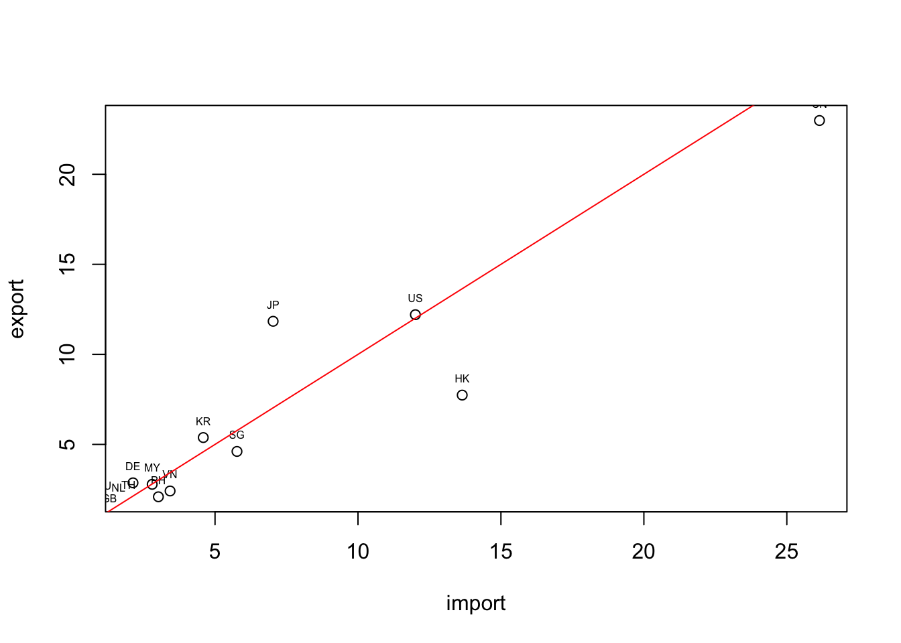

Chapter 4 Dataframe
Notes
一開始用Excel去想像抽象的語言。一欄（一直行、Column、一個變數）就是一個vector，所以可想像一個vector裡面應該資料型態要是一致的。常用基本資料型態包含numeric（數值型態）、character（文字型態）。單一一個Excel試算表就像一個list或data.frame。把好幾欄湊在一起，不同欄包含的資料形態就可能不同（有些欄是人名，有些欄是數字），湊在一起變成一個list，而data.frame就是一種特殊list的型態。
4.1 建立data.frame
4.1.1 範例一：手動輸入台北市行政區人口與面積
將資料Assign給變數。複製網頁上的資料，並把每個變項（例如區名、人口數、行政區面積）建立成vector，再分別Assign給變數。每個變項的vector必須等長（不是嗎？有幾個行政區，就要有幾個區的人口數，就要有幾個區的面積）。
population <- c(158228, 126687, 228075, 204903, 308383, 187920)
town <- c("中正", "大同", "中山", "松山", "大安", "萬華")
area <- c(7.6071, 5.6815, 13.6821, 9.2878, 11.3614, 8.8522)將vectors整合成data.frame。使用data.frame()可以將數個等長的vetors整合成一個data.frame。就像一個EXCEL資料表。
## town population area
## 1 中正 158228 7.6071
## 2 大同 126687 5.6815
## 3 中山 228075 13.6821
## 4 松山 204903 9.2878
## 5 大安 308383 11.3614
## 6 萬華 187920 8.85224.1.2 範例二：手動輸入台灣的進出口對象與數量
這個案例是到台灣出口進口貿易資料查詢的網頁上，逐筆複製資料貼上。先建立三個vecvtors，再將vectors合併為data.frame。
country <- c("CN", "US", "JP", "HK", "KR", "SG", "DE", "MY", "VN", "PH", "TH", "AU", "NL", "SA", "ID", "GB", "IN", "FR", "IT", "AE")
import <- c(26.142, 12.008, 7.032, 13.646, 4.589, 5.768, 2.131, 2.802, 3.428, 3.019, 1.976, 1.118, 1.624, 0.449, 0.983, 1.302, 1.027, 0.553, 0.670, 0.455)
export <- c(22.987, 12.204, 11.837, 7.739, 5.381, 4.610, 2.866, 2.784, 2.414, 2.092, 1.839, 1.788, 1.665, 1.409, 1.391, 1.075, 0.974, 0.899, 0.800, 0.728)
df <- data.frame(country, import, export)
str(df)## 'data.frame': 20 obs. of 3 variables:
## $ country: Factor w/ 20 levels "AE","AU","CN",..: 3 19 11 7 12 17 4 13 20 15 ...
## $ import : num 26.14 12.01 7.03 13.65 4.59 ...
## $ export : num 22.99 12.2 11.84 7.74 5.38 ...- stringAsFacgtors參數設定: 這時若以
str(df)觀察該df的結構會發現，文字型態的資料被轉為Factors，這是我們所不樂見的。過去統計通常會把文字型態當成類別變數，於是用Factors作為資料型態，但資料科學中經常要處理大量的文字資料。此時可以加入一個參數stringsAsFactors設為FALSE，意味著預設不要將文字的資料轉為Factor而是直接以文字變項來處理。 - 設定全域參數: 為了避免每次都要打這串參數，可以把它設定為全域參數，可以在程式一開始時便加上
options(stringsAsFactors = FASLE)，意味著底下所有的函式如果有stringsAsFactors這個參數，一律自動設為FALSE。
## 'data.frame': 20 obs. of 3 variables:
## $ country: chr "CN" "US" "JP" "HK" ...
## $ import : num 26.14 12.01 7.03 13.65 4.59 ...
## $ export : num 22.99 12.2 11.84 7.74 5.38 ...4.1.3 More
甚至也可以用data.frame()建立一個新的、空的data.frame。在別的程式語言中，這可能被稱為建構子或initializing。
命名規則：df.test就R的用法就是一個變數，並不是df和test各自是一個變數。
4.2 觀察data.frame
View(df)用RStudio所提供的GUI直接觀看變數head(df)取前面六筆資料（也就是六列的資料來概觀該資料）class(df)這個變數的物件型態str(df)這個data.frame的結構，包含有哪些變數、各別是什麼變數型態，並呈現前幾個範例值。summary(df)輸出每個變數的最大值、最小值、平均數、中位數等基本統計數值。dplyr::glimpse(df)為dplyr套件中的函式。和str(df)的功能幾乎相同，但排版排的好太多了。
## country import export
## 1 CN 26.142 22.987
## 2 US 12.008 12.204
## 3 JP 7.032 11.837
## 4 HK 13.646 7.739
## 5 KR 4.589 5.381
## 6 SG 5.768 4.610## [1] "data.frame"## 'data.frame': 20 obs. of 3 variables:
## $ country: chr "CN" "US" "JP" "HK" ...
## $ import : num 26.14 12.01 7.03 13.65 4.59 ...
## $ export : num 22.99 12.2 11.84 7.74 5.38 ...## country import export
## Length:20 Min. : 0.449 Min. : 0.728
## Class :character 1st Qu.: 1.016 1st Qu.: 1.312
## Mode :character Median : 2.054 Median : 1.966
## Mean : 4.536 Mean : 4.374
## 3rd Qu.: 4.884 3rd Qu.: 4.803
## Max. :26.142 Max. :22.987## Observations: 20
## Variables: 3
## $ country <chr> "CN", "US", "JP", "HK", "KR", "SG", "DE", "MY", "VN", "PH", "…
## $ import <dbl> 26.142, 12.008, 7.032, 13.646, 4.589, 5.768, 2.131, 2.802, 3.…
## $ export <dbl> 22.987, 12.204, 11.837, 7.739, 5.381, 4.610, 2.866, 2.784, 2.…4.3 操作data frame
4.3.1 取出data frame中的一個變數
每個data frame的一欄、一個變數相當於是一個vector，可以嘗試把其中一個變數取出來做資料型態觀察。
* names(df) 列出變數名稱
* df$發生.現.地點 顯示該變數內容
* df$發生時段 顯示該變數內容
* length(df$發生時段) 顯示該變數的長度（相當於有幾個）
## [1] "country" "import" "export"## NULL## NULL## [1] 0## country import export
## Length:20 Min. : 0.449 Min. : 0.728
## Class :character 1st Qu.: 1.016 1st Qu.: 1.312
## Mode :character Median : 2.054 Median : 1.966
## Mean : 4.536 Mean : 4.374
## 3rd Qu.: 4.884 3rd Qu.: 4.803
## Max. :26.142 Max. :22.9874.3.2 mutate 透過運算產生新變數
- 這裡容易犯錯的是，要記得跟程式講說你要加總或四則運算的是哪個df的variable。
- 從下面的這個操作中，該data.frame會產生一個新的變數
sub，這就相當於Excel中的某一行減去某一行，然後把資料放在新的一行。
4.3.3 filter, select 篩選資料、選取變數
- 注意，要告訴程式
import和export是哪個data.frame的。 df[,]為存取df中某個區段的數值或某個數值的方法。因此df[1, 1]會取出第一行第一列，也就是第一筆資料的第一個vector。df[2, 3]則會取出第二筆資料的第三個variable。- 下面的例子
nrow(df)為1894，有1894筆資料，所以自然df\(import與df\)export的長度都是1894。因此，比較這兩個變數的大小會得到一個長度為1894的boolean (logical) variable。因此把這個長度為1894、充滿TRUE和FALSE的logical vector丟進df的row之處，因為取自df，大小判斷式結果的長度自然和原本的df的列數相同。因此當這個TRUE/FALSE被丟在df的列之處，便會篩選出import大於p.xport的數值。 - 原本的df有五個variable，而上述的操作是篩選資料，所以被篩選的是列，因此行的數量、名稱都不會變。因此，我篩選完後，直接存取這個被篩選過的data.frame的country variable，自然是可以的。
## country import export sub
## 1 CN 26.142 22.987 3.155
## 2 US 12.008 12.204 -0.196
## 3 JP 7.032 11.837 -4.805
## 4 HK 13.646 7.739 5.907
## 5 KR 4.589 5.381 -0.792
## 6 SG 5.768 4.610 1.158
## 7 DE 2.131 2.866 -0.735
## 8 MY 2.802 2.784 0.018
## 9 VN 3.428 2.414 1.014
## 10 PH 3.019 2.092 0.927
## 11 TH 1.976 1.839 0.137
## 12 AU 1.118 1.788 -0.670
## 13 NL 1.624 1.665 -0.041
## 14 SA 0.449 1.409 -0.960
## 15 ID 0.983 1.391 -0.408
## 16 GB 1.302 1.075 0.227
## 17 IN 1.027 0.974 0.053
## 18 FR 0.553 0.899 -0.346
## 19 IT 0.670 0.800 -0.130
## 20 AE 0.455 0.728 -0.273## [1] "country" "import" "export" "sub"## [1] 20## country import export sub
## 1 CN 26.142 22.987 3.155
## 4 HK 13.646 7.739 5.907
## 6 SG 5.768 4.610 1.158
## 8 MY 2.802 2.784 0.018
## 9 VN 3.428 2.414 1.014
## 10 PH 3.019 2.092 0.927
## 11 TH 1.976 1.839 0.137
## 16 GB 1.302 1.075 0.227
## 17 IN 1.027 0.974 0.053## [1] "CN" "HK" "SG" "MY" "VN" "PH" "TH" "GB" "IN"## [1] "CN" "HK" "SG" "MY" "VN" "PH" "TH" "GB" "IN"## [1] "character"## [1] "character"## [1] "data.frame"## [1] "numeric"4.3.4 sorting 排序：按照某個變數排序
df.sorted <- df[order(df$import),]會使得整個df照import的大小排序重新做排列。因為order(df$import)會把資料照指定順序排列後的位置傳回來，所以把他丟給df的列的位置，便會使得df的資料照指定的順序排列。
預設是由小到大，加上decreasing = T這個參數後變成由大而小。
# sort rows by df$import column
df.sorted <- df[order(df$import),]
# View(df.sorted)
# sort rows in decreasing order
df.sorted <- df[order(df$import, decreasing = T),]
# add - to column in order() can sort in decreasing order
df.sorted <- df[order(-df$import),]
head(df.sorted)## country import export sub
## 1 CN 26.142 22.987 3.155
## 4 HK 13.646 7.739 5.907
## 2 US 12.008 12.204 -0.196
## 3 JP 7.032 11.837 -4.805
## 6 SG 5.768 4.610 1.158
## 5 KR 4.589 5.381 -0.7924.4 MORE
4.4.1 Plotting
graphics::plot()為會預載入R的繪圖套件，如果希望繪圖的同時加上回歸線和資料點標籤的話，必須要三行一起執行。
plot(df[1:10, 2:3])
text(import, export, labels=country, cex= 0.5, pos=3)
lines(1:25, 1:25, col='red')
4.4.2 Using dplyr
## Warning: package 'dplyr' was built under R version 3.5.2##
## Attaching package: 'dplyr'## The following objects are masked from 'package:stats':
##
## filter, lag## The following objects are masked from 'package:base':
##
## intersect, setdiff, setequal, uniondf <- data.frame(country, import, export, stringsAsFactors = F)
df <- mutate(df, sub = import - export)
filter(df, import > export)## country import export sub
## 1 CN 26.142 22.987 3.155
## 2 HK 13.646 7.739 5.907
## 3 SG 5.768 4.610 1.158
## 4 MY 2.802 2.784 0.018
## 5 VN 3.428 2.414 1.014
## 6 PH 3.019 2.092 0.927
## 7 TH 1.976 1.839 0.137
## 8 GB 1.302 1.075 0.227
## 9 IN 1.027 0.974 0.053## country export
## 1 CN 22.987
## 2 US 12.204
## 3 JP 11.837
## 4 HK 7.739
## 5 KR 5.381
## 6 SG 4.610
## 7 DE 2.866
## 8 MY 2.784
## 9 VN 2.414
## 10 PH 2.092
## 11 TH 1.839
## 12 AU 1.788
## 13 NL 1.665
## 14 SA 1.409
## 15 ID 1.391
## 16 GB 1.075
## 17 IN 0.974
## 18 FR 0.899
## 19 IT 0.800
## 20 AE 0.728